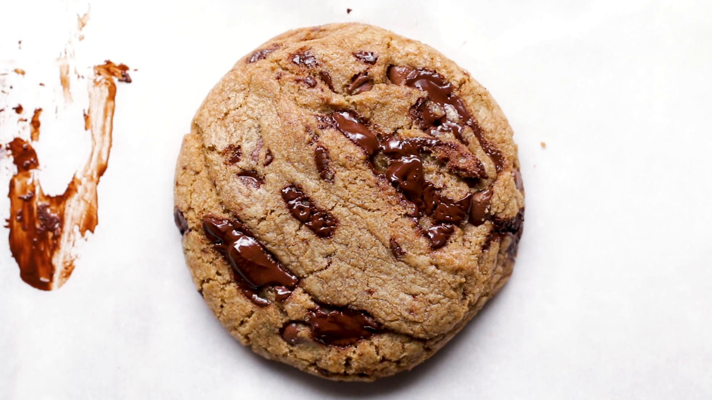

Cookies

Description
These are some of the best cookies I have tried to make and hasn't compared yet to any other recipe I have tried so far. What makes these cookies stand out the most to me is the browned butter that is used instead of using regular softened butter and also the amount of chocolate that is used in the recipe is just perfect
Ingredients
- 1 cup bread flour
- 3/4 cup all-purpose flour
- 2 teaspoons kosher salt, or 1-1/2 teaspoons table salt
- 1 teaspoon baking soda
- 1 cup unsalted butter, 2 sticks
- 2 tablespoons water, room temperature
- 1 cup dark brown sugar
- 1/2 cup white sugar
- 2 teaspoons vanilla extract
- 1 teaspoon espresso powder
- 1 large egg
- 1 large egg yolk
- 1/2 cup semi-sweet chocolate chips
- 5 oz dark chocolate, chopped
Steps